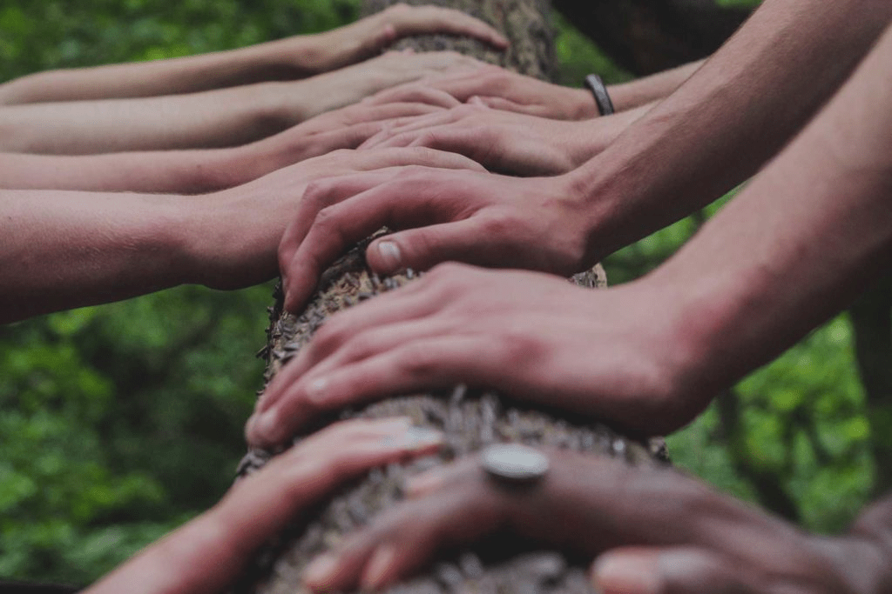

Actúa por el planeta
Estadísticas de impacto global
0
Personas alcanzadas
0
Arboles sembrados
0
Número de socios activos
0
Comunidad
Un festival para el futuro
En uno de los lugares con mayor biodiversidad del planeta, un joven líder está empleando la educación como herramienta para el cambio.

Conservamos las tierras y aguas de las que depende la vida.
Cada hectárea que protegemos y cada km de río que restauramos empieza contigo. Tu apoyo nos ayuda a hacer frente a la doble amenaza del cambio climático y la pérdida de biodiversidad en más de 70 países.
Jóvenes cambiando el mundo
En M.A. SEO, quieren ayudar a jóvenes de comunidades que no tienen muchas oportunidades, dándoles las habilidades necesarias para convertirse en líderes de la conservación.